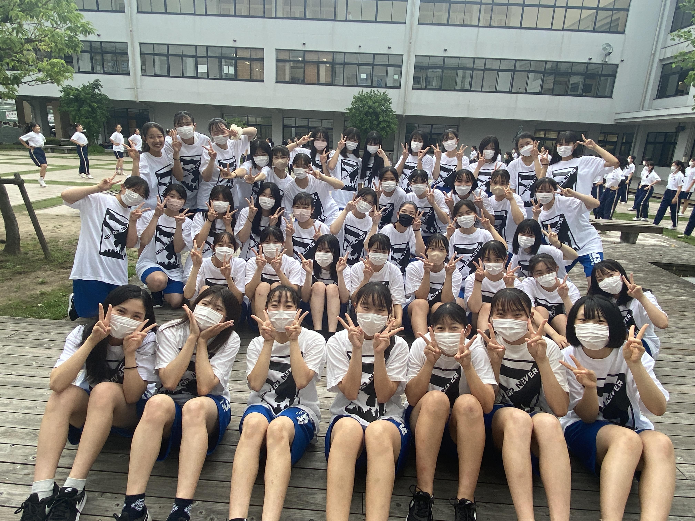
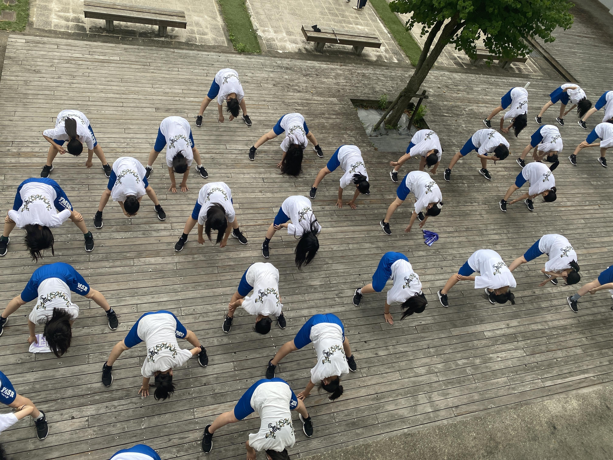
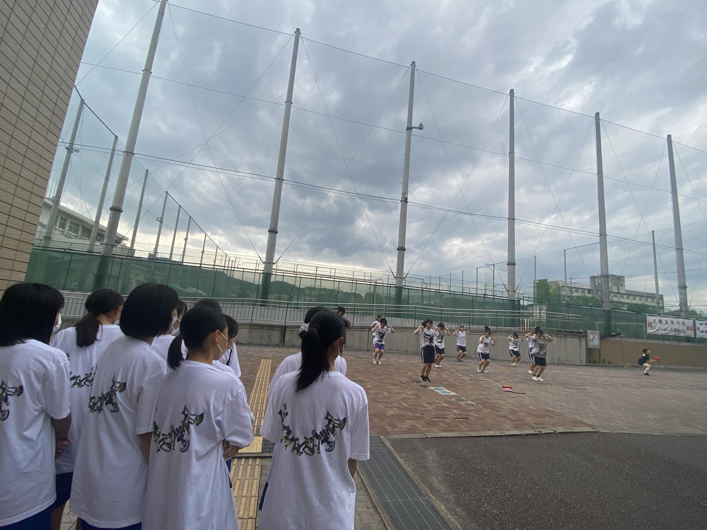
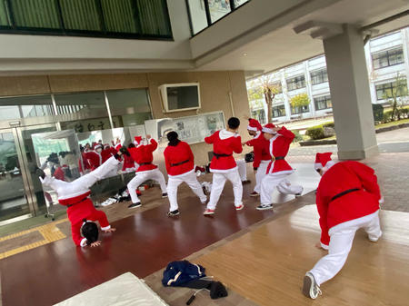

ダンス部１年生
１年生に部活着が届きました！
憧れの部活着に１年生はすごく嬉しそうでした。

いつも練習を引っ張ってくれている２年生と

準備体操しているところを上から

今日は、夏の大会に向けた練習を少しだけ見学しました。
１年生達は熱心に先輩たちの姿を見ていました。
みんなの１年後が楽しみです。

第15回日本高校ダンス部選手権 春の公式大会 近畿・中国・四国大会
2022年３月30日（水）、31日（木）に東大阪アリーナにて、第15回日本高校ダンス部選手権 春の公式大会 近畿・中国・四国大会が開催されました。
代表を中心に１年生のみで１から作品を作り上げ、大会に臨みました。
練習期間中は色々なことがあり、思うように練習することができない日々が続きましたが、１年生たちは、たくさん泣いて、たくさん悩みながらも、少しずつ練習を積み重ねてきました。このメンバーで作品をつくることができるのは最初で最後です。入賞はできませんでしたが、素敵な思い出ができました。
〈１年生女子27名〉
大会前に... （この日は桜がすごく綺麗でした！）
大会終わりに...
先輩たちも来てくれました。
作品づくりを引っ張ってくれた５人に、みんなから感謝を伝えました。

〈１年生男子４名〉
大会前に...
本番直前の最後の練習...
大会終わりに... 先輩が応援に来てくれました！
大会関係者の皆様、このような状況下で大会を開催していただきありがとうございました。
保護者の皆様、日頃より御支援・御協力いただきありがとうございました。
ダンス部 卒業イベント②
３月25日（金）に開催されましたダンス部卒業イベントの出演メンバーをプログラム順に紹介していきます。
１．HIPHOP（1,2年）
２．WAACK（1,2年）
３．GIRLS（1,2年）
４．MC①
５．RB（1,2年）
６．LOCK（1,2年）
７．Breakin（1,2年）
８．KPOP［punhong］
９．KPOP［RUMOR］
10．KPOP［ENHYPEN］
11．MC②
12．RB（2,3年）
13．GIRLS（2,3年）
14．HIPHOP（2,3年）
15．WAACK（2,3年）
16．MC③
17．ISSEI / number
18．MISAKI / number
19．HONOKA / number
20．HARU＆SORANE / number
ダンス部 卒業イベント①
３月25日（金）、山城高校体育館にてダンス部卒業イベントが開催されました。
新型コロナウイルス感染症対策として歓声をあげられない代わりに、客席にペンライトを配布しました。
真っ暗な中で、スポットライトとペンライトのみが光る空間は、いつもの体育館のはずが少し特別な空間に感じました。
～ リハーサルの様子 ～
～ 公演前、最後のミーティング ～

～ R３年度山城高校ダンス部 集合写真 ～
高校生活最後に、山城高校ダンス部として素敵な思い出をつくることができました。
ダンス部練習風景
今日も寒い中、感染症対策を徹底しながら活動しています。
最近は、卒業公演に向けて引退した３年生が練習に参加するが日があり、みんな嬉しそうです。


普段は、１・２年生合同でジャンルごとに分かれて練習しています。
今日は練習の最後にHIPHOPを踊るグループが通し練習をしているところをほかの部員たちが見ていました。
ダンス部練習風景【クリスマス公演】
12月13・14・15日の昼休みにクリスマス公演を行いました。
クリスマス公演に向けて生徒たちはジャンルごとに分かれ、毎日一生懸命練習していました。
～ 練習の様子 ～

～ 準備・リハーサルの様子 ～
２年生の代表にとっては、３年生が引退し、部を引っ張る立場としての初めての大仕事でした。
クリスマス公演成功に向けて、見えないところでもたくさん頑張ってくれました。よく頑張りました！
2021年２月11日(祝)に、
2020年度 第９回近畿公立高等学校テニス大会個人の部が、
大阪・マリンテニスパーク北村で開催され、
本校からは３名が出場し、熱戦を繰り広げました。
試合結果は以下の通りです。
２R 藤本萌七未①(山城) ６４ 冨田 さや①(滋賀/栗東)
２R 村上 らん②(山城) ６０ 浅野 一華②(和歌山/海南)
２R 松本 胡桃②(山城) ２６ 渡部 未来②(大阪/箕面)
３R 藤本萌七未①(山城) ６０ 牧野 早莉②(奈良/一条)
３R 村上 らん②(山城) ６３ 山脇 聖菜②(滋賀/栗東)
ｺﾝｿﾚ 松本 胡桃②(山城) ７５ 足立 真希②(滋賀/国際情報)
４R 藤本萌七未①(山城) ３６ 竹本 早希②(滋賀/守山)
４R 村上 らん②(山城) １６ 岩野 美玖①(滋賀/栗東)
村上、藤本はともにベスト８で、惜しくも賞状をのがしました。
緊急事態宣言発令の中、万全の感染症対策を講じて、
無事に大会を運営していただいた実行委員会の皆様、
ご支援を頂いた保護者の皆様、
どうもありがとうございました。
女子テニス部 大会結果・活動報告
◎京都招待テニス選手権大会
１２月１９日(土)と２０日(日)に
山城総合運動公園テニスコートで開催された、
京都招待テニス選手権大会に、
京都府の代表として出場しました。
団体の部は初戦を勝ち上がってベスト８、
個人の部もシングルス出場者２名がそれぞれ２勝して、
ともにベスト８の好成績を収めました。
日頃の練習の成果を発揮することができましたが、
同時に、まだまだ至らないところを痛感する大会でした。
試合の詳細は以下の通りです。
〇団体の部 １R 山城 ２１ 雲雀丘学園(兵庫)
２R 山城 ０２ 立命館守山(滋賀)
コンソレーション
１R 山城 ０２ 京都外大西(京都)
〇個人の部・シングルス
１R 藤本萌七未(１年:山城) ６２ 高市 ゆう(２年:加古川南)
村上 らん(２年:山城) ６０ 上坂 心愛(１年:大阪女学院)
２R 藤本萌七未(１年:山城) ７６(1) 津山 光海(２年:京都女子)
村上 らん(２年:山城) ６３ 樋口 南未(２年:堀川)
３R 藤本萌七未(１年:山城) ０６ 久保 まこ(２年:京都外大西)
村上 らん(２年:山城) １６ 安川美緒菜(１年:雲雀丘学園)
・ダブルス
１R 松本(２年)本間(１年)(山城) ３６ 岩佐(２年)栗尾(２年)(奈良育英)
ｺﾝｿﾚ１R 松本(２年)本間(１年)(山城) ４１ 笠井(１年)岸田(２年)(北稜)
ｺﾝｿﾚ２R 松本(２年)本間(１年)(山城) ０４ 村上(２年)磯山(１年)(京都両洋)

◎秋期合宿
１１月２０日(金)～２２日(日)に、秋期合宿として、福井県に遠征してきました。
２１日は三国運動公園テニスコートで、北陸学院高校との練習試合、
２２日は福井市わかばテニスコートで、藤島高校との練習試合を行いました。
両校とも強豪校で、山城高校としては胸をお借りするばかりでしたが、
部員達にとっては大変良い経験をさせてもらえました。
遠いところまで足を運んでいただいた北陸学院高校の皆様、
コートの手配やら準備までしていただいた藤島高校の皆様、
大変お世話になりました。
（三国運動公園テニスコート・応援風景）

（三国運動公園テニスコート・ナイター練習風景）
（福井市わかばテニスコート）
（合宿の打ち上げはみんなでラーメン）
１１月７日(土)に、向島西テニスコートで開催された、
第21回京都府公立高等学校テニス選手権大会において、
10度目の優勝、８連覇を果たしました。
この結果により、令和３年１月５日、６日に大阪で開催される、
第18回近畿公立高等学校テニス大会への出場が決まりました。
11年連続の出場です。過去に恥じない成績が残せるよう、
いっそう練習に励みます。
応援していただいた、保護者の皆様、先輩の方々、
ありがとうございました。
試合の詳細は以下の通りです。
準決勝 山城 ３０打切 鳥羽
決勝 山城 ３０打切 西京
団体メンバー：村上(２年)･藤本(１年)･松本(２年)･本間(１年)･大橋(２年)
久保田(２年)･西田(２年)･中根(２年)･岡田(２年)
〇令和２年度 第40回京都府高等学校テニス選手権大会
10月10日～18日に市部予選、24日・25日に府内予選が行われました。
ジュニア経験者の４名以外は府内予選に進めず、涙をのみましたが、
多くの選手が、ブロック決勝まで駒を進め、
力をつけてきたことを証明してくれました。
府内予選に進んだ選手もほとんどが初戦敗退という厳しい結果でしたが、
今後の課題を見つけられたと思います。
府下大会の試合結果は以下の通りです。
女子シングルス ベスト64 村上 らん(２年)
松本 胡桃(２年)
藤本萌七未(１年)
本間 涼帆(１年)
女子ダブルス ベスト16 藤本(１年)本間(１年)ペア
ベスト32 村上(２年)松本(２年)ペア
〇令和２年度京都府公立高等学校テニス大会 女子個人の部
８月の1次予選に続いて、10月25日に、準決勝、決勝が行われました。
試合結果は以下の通りです。
準決勝 村上 らん(山城)(２年) ６２ 浅田亜花音(久御山)(２年)
藤本萌七未(山城)(１年) ６４ 久保 玲奈(西舞鶴)(２年)
決勝 村上 らん(山城)(２年) ６３ 藤本萌七未(山城)(１年)
村上は昨年に続いて、２連覇を遂げました。
藤本はノーシードからここまで勝ち上がりました。
両名は、２月に大阪で行われる、
近畿公立高等学校テニス大会に、
京都府代表として出場することが決まりました。
カテゴリ一覧
主要リンク